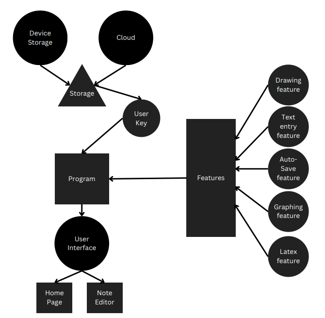

The Note Taking App is an Android application developed using Android Studio, with the purpose of providing users with a convenient and versatile tool to take notes, draw sketches, write mathematical equations in LaTeX, create graphs, and save them in both local device and cloud storage.
The app follows the Repository architecture pattern, which separates the data layer from the rest of the application. The data layer consists of a Repository class that communicates with two data sources: a folder of text files for offline storage, and a cloud service (such as Firebase) for online storage.

The app will have a simple and intuitive user interface that makes it easy for users to navigate and use all of the features. The interface will include a main screen that displays a list of all notes, as well as buttons for creating new notes, accessing the drawing and graphing features, and inserting Latex equations.
The app will make up two main classes, the Home page and the Note Editor page
The home page of the note-taking app will be the first screen that users see when they launch the app. It will display a list of all notes that the user has created. Each note will show its title and a short preview of its content. Users can click on a note to view and edit its content.
In addition to the list of notes, the home page will also have buttons for creating a new note, accessing the drawing and graphing features, and inserting mathematical equations.
When users select a note from the home page, they will be taken to the note editor page. The note editor page will allow users to create and edit notes using a simple text editor. Users can add titles and tags to their notes to help with organization.
The note editor page will also have a drawing feature that allows users to create sketches and diagrams using their finger or stylus. Users can choose from a variety of colors and brush sizes, as well as an eraser tool to correct mistakes.
Furthermore, the note editor page will provide a Latex feature that allows users to insert mathematical equations into their notes using Latex notation. Users can write equations using a dedicated Latex editor, and the app will automatically convert the notation into a readable format.
Lastly, the note editor page will have a graphing feature that allows users to create and edit graphs. Users can choose from a variety of graph types and customize the appearance of the graph.
The note editor page will also have an auto-save feature that automatically saves notes as they are created or edited, ensuring that users do not lose their work. Users will also be able to manually save notes at any time.
Overall, the note editor page will provide users with a comprehensive set of tools for creating and editing notes, as well as other useful features for organizing and presenting their work.
One of the main control issues that may arise in the note-taking app is ensuring that users do not accidentally delete or overwrite important notes. To prevent this, the app should include a confirmation prompt whenever the user attempts to delete a note or overwrite an existing note.
Another control issue that may arise is ensuring that users are able to navigate the app and its features easily. To address this, the app should have a clear and intuitive interface with well-labeled buttons and menu items. The app should also provide clear instructions or tooltips for using each feature.
Furthermore, the drawing feature of the app may pose some control issues, as users may accidentally make unintended marks or erase important content. To address this, the app should include an undo/redo feature and a zoom-in function to allow users to make precise marks.
Lastly, the app should have a password protection feature to prevent unauthorized access to the notes. Users should be able to set a password or PIN code to lock the app, and the app should automatically lock after a period of inactivity.
By addressing these control issues, the note-taking app can provide a safe and user-friendly environment for users to create, organize, and access their notes.
In conclusion, this note-taking app will be a useful tool for users who need to take notes, create sketches and diagrams, and insert mathematical equations and graphs into their work. The app will be easy to use and will provide a range of features that will make it a valuable tool for students, professionals, and anyone else who needs to take notes on the go.